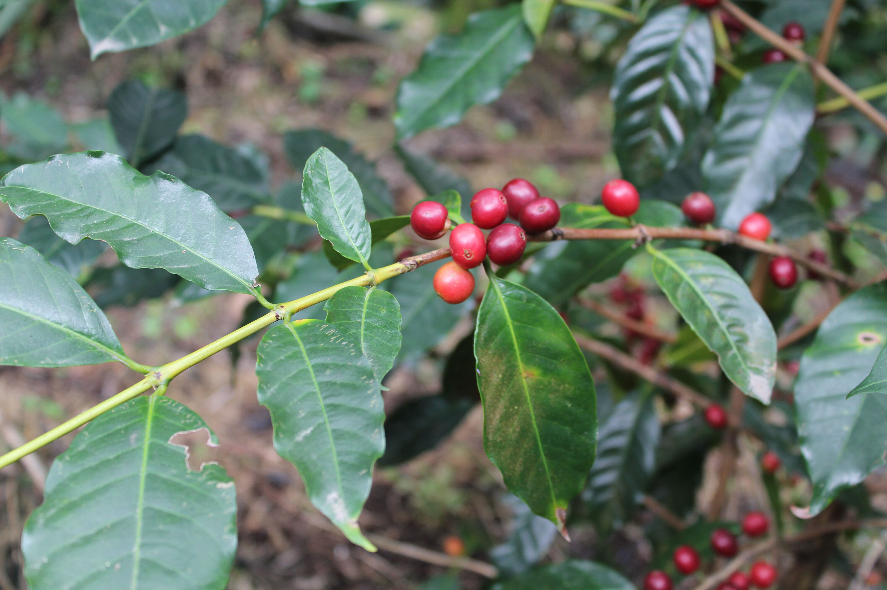
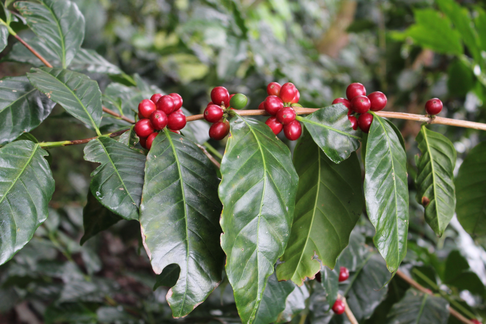
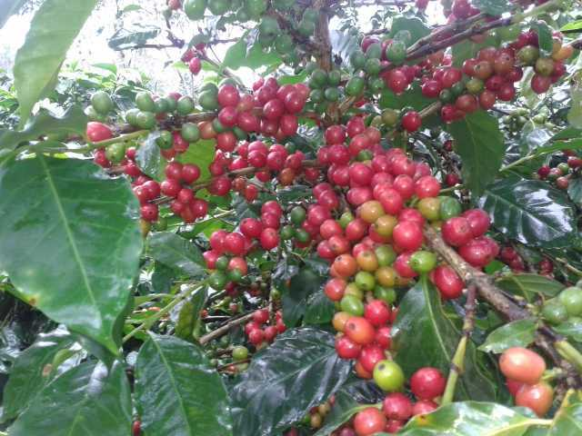

Сорта кофе
Виды и разновидности · Сравнение · Корзина
Сравнение разновидностей арабики
В таблице собраны особенности растений. На вкус кофе также влияют место выращивания, обработка и обжарка.
| Разновидность | Особенность растения | Фотография | В корзину |
|---|---|---|---|
| Типика | Высокорослая разновидность арабики. |  |
В корзину |
| Бурбон | Разновидность арабики, от которой произошла Катурра. |  |
В корзину |
| Катурра | Компактная разновидность, возникшая как естественная мутация Бурбона. |  |
В корзину |
Источник описаний и фотографий: World Coffee Research. Нажмите на фотографию, чтобы открыть её в новой вкладке.
Виды кофе и разновидности арабики
- Арабика
- Типика (Typica)
- Бурбон (Bourbon)
- Катурра (Caturra)
- Робуста — распространённое название кофе вида Coffea canephora.
Корзина для дегустации
Выберите сорт в таблице или укажите его здесь.
Это учебная корзина. После отправки формы ответ httpbin.org откроется в новой вкладке.